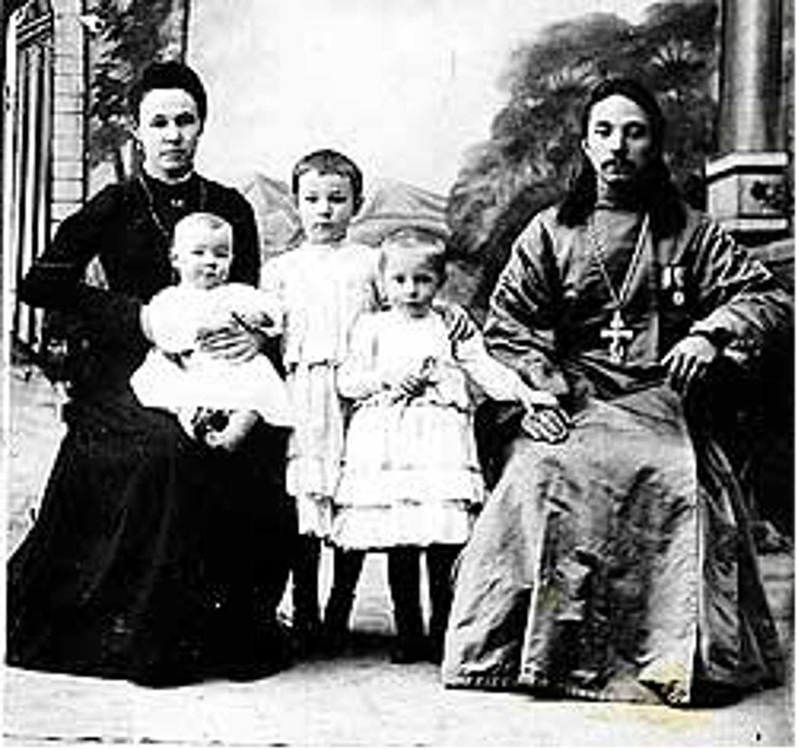

Протоиерей Павел Косминков
Протоиерей Павел родился в 1875 году в селе Новинки Серпуховского уезда в семье священника Василия Косминкова. По окончании Московской семинарии был рукоположен во священника, и с 1900 года служил в Покровской церкви в селе Лысцево Коломенского уезда. После революции отец Павел был возведен в сан протоиерея и назначен благочинным.
3 февраля 1930 года коллегия ОГПУ приговорила протоиерея Павла Косминкова к заключению в исправительно-трудовой лагерь на три года. Оттуда батюшка возвратился в Покровскую церковь в Лысцеве. За усердное служение в 1933 году награжден палицей. В июле 1934 года отца Павла назначили в Никольский храм в селе Столпово Зарайского района.
15 ноября 1937 года постановление об аресте утвердил начальник управления НКВД по Московской области Якубович. В ночь с 16 на 17 ноября в дом к отцу Павлу пришли сотрудники НКВД, предъявили ордер на обыск и арест. Перерыв весь дом, они изъяли дароносицу, а отца Павла доставили в коломенскую тюрьму, где он был допрошен. «Виновным себя в антисоветской и контрреволюционной деятельности не признаю» — был ответ.
25 ноября 1937 года тройка НКВД приговорила отца Павла к десяти годам заключения в ИТЛ. Находясь в заключении, протоиерей Павел Косминков умер от непосильных условий содержания 2 марта 1938 года и был погребен в безвестной могиле.